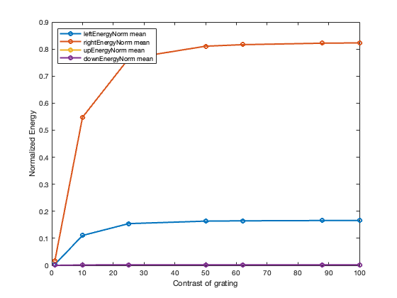

Contents
clear; close all; clc;
4a)
Here, the sinusoidal grating is moving rightward and the contrast of this grating is varied. For each contrast, the responses of the four direction-selective neurons are computed. The energies are then normalized and this is used to compute the mean energy response for each neuron. The result is a sigmoidal curve. We can see that for the rightward-moving grating, the rightward-selective neuron has the highest energy followed by leftward-selective neuron, while upward and downward selective neurons have almost no response. Thus, we can confirm that the neurons are direction-selective. By changing the contrast, we see that the response of the neurons increases and then saturates to a certain value. The saturation can be controlled by normalizing the energies.
tic deltaX = 1/120; % spatial sampling rate x_x = -2:deltaX:2; % spatial array along x axis x_y = -2:deltaX:2; % spatial array along y axis deltaT = 1; % ms duration = 1000; % ms t = 0:deltaT:duration-deltaT; % time-array tau = 25; % ms phase = 0; % initial phase of the stimulus sf = 30; % cycles/pixel ori = "lr"; % for left-right phase_shift = -2*pi/125; % cycles/frame contrasts = [1, 10, 25, 50, 62, 88, 100]; % contrasts of the grating sig = 0.1; % standard deviation of the Gaussian (in deg) [evenFilt, oddFilt] = gabor_filter(x_x, sig, 4); % computes spatial filters mean_energies = zeros(length(contrasts), 4); for ii = 1:length(contrasts) contrast = contrasts(ii); [leftEven, leftOdd, rightEven, rightOdd, leftEnergy, rightEnergy, ... upEven, upOdd, downEven, downOdd, upEnergy, downEnergy] = ... neuron_responses(x_x, x_y, t, deltaT, tau, contrast, phase, ... phase_shift, sf, ori, oddFilt, evenFilt); [leftEnergyNorm, rightEnergyNorm, upEnergyNorm, downEnergyNorm] = ... energy_norm(leftEnergy, rightEnergy, upEnergy, downEnergy); x_y_dim = 241; st_tm = 400; % ms mean_energies(ii, :) = [mean(leftEnergyNorm(x_y_dim, x_y_dim, st_tm:end)), ... mean(rightEnergyNorm(x_y_dim, x_y_dim, st_tm:end)), ... mean(upEnergyNorm(x_y_dim, x_y_dim, st_tm:end)), ... mean(downEnergyNorm(x_y_dim, x_y_dim, st_tm:end))]; end toc plt_titles = ["leftEnergyNorm mean", "rightEnergyNorm mean", ... "upEnergyNorm mean", "downEnergyNorm mean"]; figure() for ss = 1:size(mean_energies, 2) plot(contrasts, mean_energies(:, ss), 'o-', ... 'DisplayName', plt_titles(ss), 'LineWidth', 2); xlabel('Contrast of grating') ylabel('Normalized Energy') legend('location', 'northwest') hold on; end
Elapsed time is 478.336377 seconds.